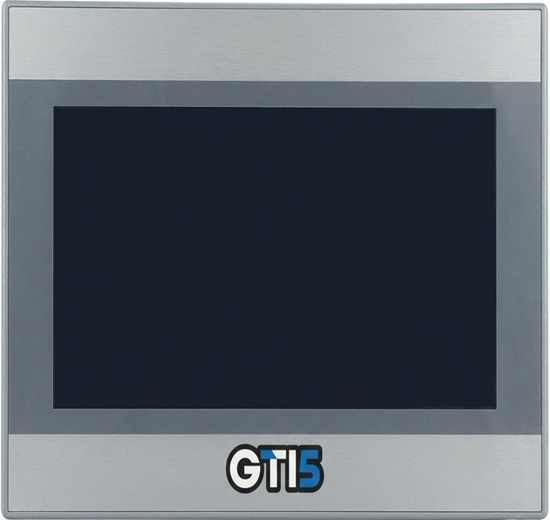

IHM Weintek e IHM GTI5
As IHMs Weintek, Anyhertz e a GTi5 são interfaces homem-máquina comercializadas e integradas pela HI Tecnologia para visualização, monitoramento e controle local de processos industriais. Nessa etapa, você aprenderá o básico conceitual dessas linhas de IHMs Touchscreen e a utilizá-las no ecossistema de automação. Para o desenvolvimento das telas e lógicas de operação, você utilizará ferramentas de software essenciais como o EasyBuilder Pro e o SmartManager Pro. Não se esqueça de salvar os arquivos das aulas em pastas individuais para cada tema, na sua pasta localizada em: L:\GAdmn\DSuporte Tecnico\Minha Pasta.

As principais IHMs Touch Screen comercializadas pela HI.
Leia sobre as principais diferenças entre IHM Weintek e IHM AnyHertz ou GTI5.
Acessar conteúdoLeia o conteúdo sobre a IHM Weintek e baixe o software EasyBuilder e o Manual.
Acessar conteúdoBaixe e instale o software SmartManagerPro para programação da GTI5.
Baixar SmartManagerProAssista ao curso sobre a IHM Weintek e reproduza o conteúdo no EasyBuilder e no SmartManager.